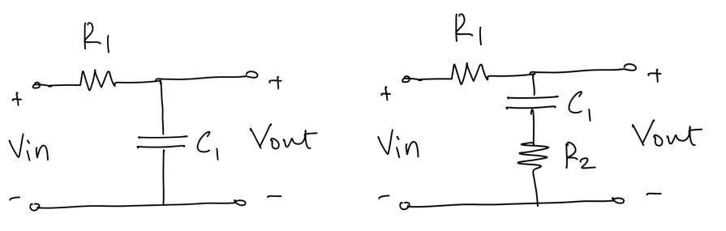
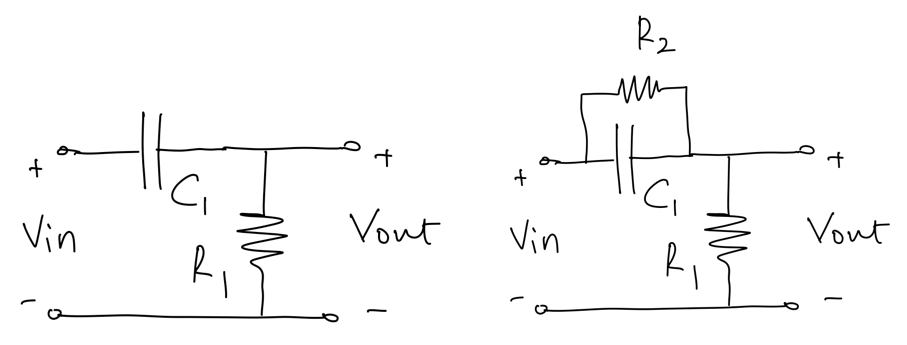
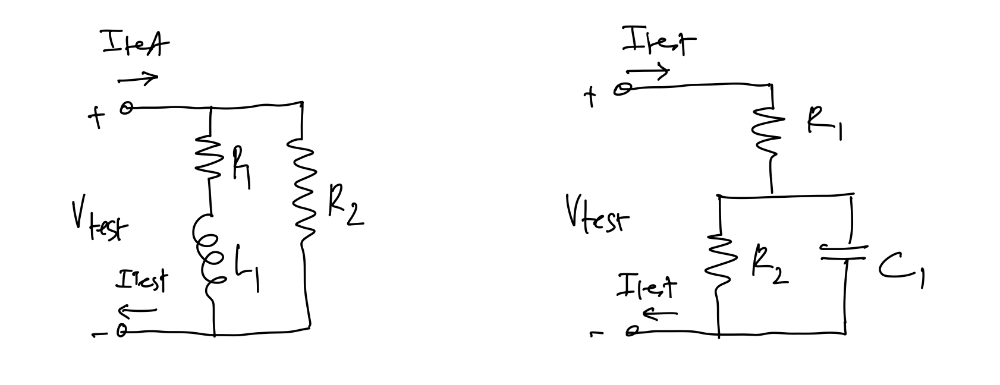
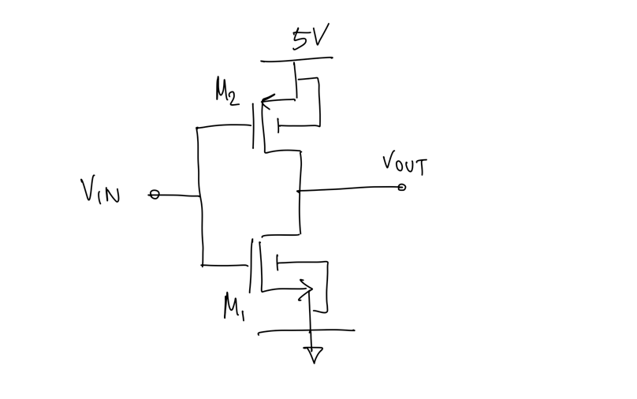
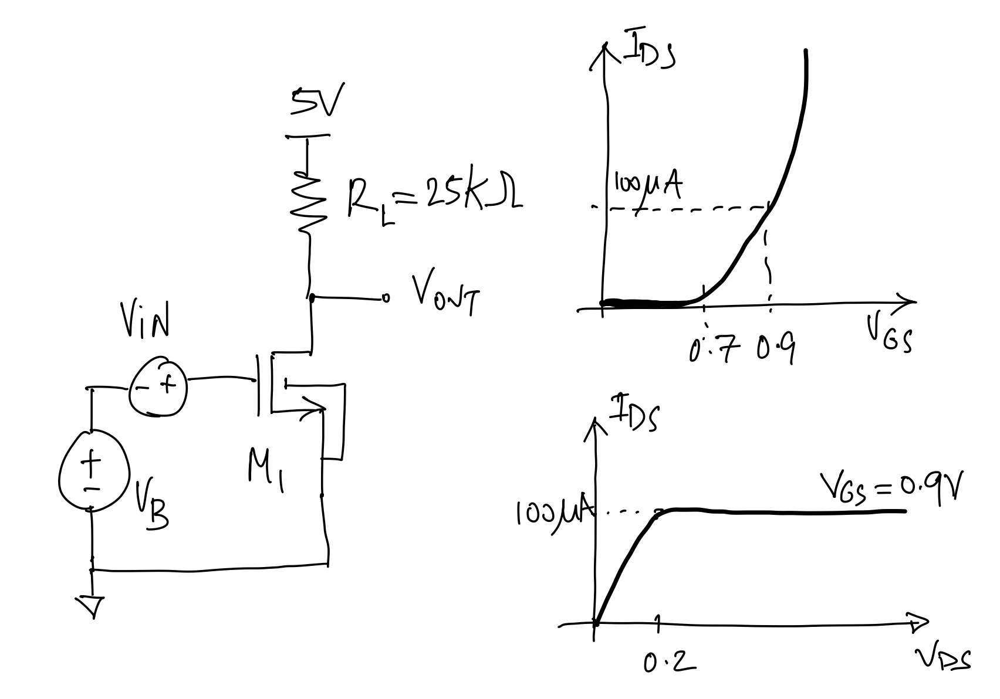

1. Pre-Requisites Test for Analog Electronic Circuits#
1.1. Assumed Preparation#
EE3201 Circuit Analysis
EE3106 Solid-State Devices and Materials
EE3331 Electronic Circuits I
EE3081 Signals and Systems
1.2. Circuit Analysis#
Analyze the following circuits:

Derive the expression for the transfer function \(H(s) = V_{out}(s)/V_{in}(s)\).
What are the poles and zeros of \(H(s)\)?
Plot the Bode diagram for \(H(s)\) assuming \(R_1 = 10K\Omega, C_1 = 160pF, R_2 = 1K\Omega\).
Assume \(V_{in}(t) = \sin(2\pi f t)\) with f = 100kHz; plot \(V_{in}(t)\) and \(V_{out}(t)\) in steady state.
What type of filter is the network on the left?
The network on the right is called a lag network; can you explain why?
Repeat the same analysis for the following circuits:

Now assume \(R_1 = 10K\Omega, C_1 = 160pF, R_2 = 100K\Omega\).
The network on the right is called a lead network; can you explain why?
Determine the impedance \(Z(s) = V_{test}(s)/I_{test}(s)\) for the following networks:
‘
Plot the magnitude \(|Z(j\omega)|\) vs the angular frequency \(\omega\) on a log-log plot and the phase \(\angle Z(j\omega)\) vs the angular frequency \(\omega\) on semilogx plot over the relevant frequency range.
Assume \(R_1\) = 10\(\Omega\), \(R_2\) = 1\(K\Omega\), and \(L_1\) = 160\(\mu H\) for the left network
Assume \(R_1\) = 10\(\Omega\), \(R_2\) = 1\(K\Omega\), and \(C_1\) = 1.6\(nF\) for the right network
Use a spice-type simulator to verify your results. Carefully consider which simulation analyses to use for the various parts of the questions.
1.3. Systems Analysis#
For the following transfer functions, are the poles and zeros in the left or right half of the complex plane? Draw their impulse response and step response:
\(H(s) = \frac{A}{1 + s/\omega_p}\)
with \(\omega_p = 1/(2\pi 1\mu s)\)
\(H(s) = \frac{A}{1 + s/\omega_p}\)
with \(\omega_p = -1/(2\pi 1\mu s)\)
\(H(s) = \frac{A}{(1 + s/s_{1})(1 + s/s_{2})}\)
with \(s_1 = \alpha + j \omega_{p}\), \(s_2 = \alpha - j \omega_{p}\), \(\alpha = 1/(10 \mu s)\), \(\omega_p = 1/(2\pi 1\mu s)\)
\(H(s) = \frac{A}{(1 + s/s_{1})(1 + s/s_{2})}\)
with \(s_1 = \alpha + j \omega_{p}\), \(s_2 = \alpha - j \omega_{p}\), \(\alpha = -1/(10 \mu s)\), \(\omega_p = 1/(2\pi 1\mu s)\)
(more advanced) Derive the expression for the impulse and step response for the circuits above and plot them.
(more advanced) Use a toolbox in a mathematical tool like Matlab or NumPy (with the Control Systems Library) to check your results
1.4. MOS Devices and Basic Electronics Circuits#
You can assume a 5V CMOS technology with transistor threshold voltages \(V_{Tn} = |V_{Tp}| = \) 0.7V; the transistors have ideal square-law behavior.
Given the following two-transistor circuit:

Plot the \(V_{OUT}\)-\(V_{IN}\) characteristic for \(V_{IN}\) going from 0 to 5V.
What the region of operation of \(M_1\) and \(M_2\), when \(V_{IN}\) is 0, 2.5 and 5V; explain your reasoning.
Given the following one-transistor amplifier[1] \(V_B = \) 0.9V, and the nMOS transistor characteristics shown:

Assuming \(V_{IN} = 0\),
determine the bias current through M1
determine the DC bias of \(V_{OUT}\)
what is the gate-overdrive voltage of M1
what is the transconductance \(g_m\) of M1; if you cannot find the \(g_m\), use 2mS for the remainder of this question.
Assuming \(V_{IN} = 10mV\),
what are the current through M1 and \(V_{OUT}\) now?
based on this calculation, what is the small-signal gain of the amplifier?